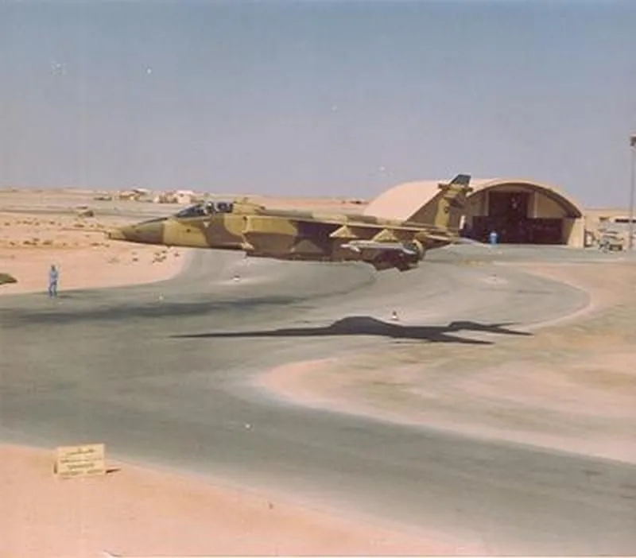

沙漠大猫，海湾战争中的法国“美洲虎”攻击机（下）
发布时间：2020-2-18
原作者：Armstrong
搬运地址：空军之翼
贴地飞行
“美洲虎”紧贴地面飞行，尾流扬起大片沙漠尘土，飞行员们不时使用30毫米机炮对前方射击以压制地面的伊拉克人。法国“美洲虎”的干扰弹发射器安装在机翼下方靠近机身的位置，由于是向下发射，以及执行首次任务时“美洲虎”的高度是如此之低，以至于红外干扰弹在发射后撞到沙漠反弹飞向天空，滑出一道明亮弧线，让后面的飞行员以为是高炮曳光弹，混乱到达顶点。第一编队抵达贾伯机场，投下了“白鲸”和227千克高阻炸弹，没有遭遇任何反抗。到目前为止一切都很好，但脱离目标返航时，编队不知不觉地飞越了伊拉克的一个司令部。六架“美洲虎”前面突然竖起一道火力墙，“朱庇特6”被一发卡拉什尼科夫步枪子弹击中，切断了一些飞控电缆，飞行员科里斯特中尉（绰号“耶稣”）开始了漫长的返航挣扎。
进入科威特后，第一编队享受到出其不意这个红利，但第二编队的情况就有所不同了。跟在第一编队一分钟后抵达战场时，第二编队很快就遭到了猛烈高射火力的袭击。一位飞行员回忆：“我们看到地面上闪闪发光的正方形火光，那是ZSU-23/4，安装在装甲底盘上的4门23毫米高炮，眼前的景象就像一部战争电影，只不过寂静无声，我们能听到的只有头盔中自己的呼吸。”一枚SA-7地空导弹腾空而起，紧接着又是另外几枚。第一编队痛了马蜂窝，让马蜂们将所有愤怒都发泄到第二编队上。
我的头上有个洞！
由于导航设备不佳，第二编队偏离预定攻击航线几公里。按照计划，第二编队会在首次空中加油期间接受导航信号对导航系统进行修正，但编队并未受到信号，导致“美洲虎”们飞到机场外围，错过了攻击航线的切入点。尽管如此，贾伯机场还是出现在飞行员们的视野中，但向左偏移了50°。对于重载“美洲虎”来说低空转弯并不是一件容易的事，呼号“朱庇特11”的马哈涅上尉说：“所以我们迅速寻找随机目标，我一直在左看右望，此时我的头部突然遭受猛击，可怕的震动导致我完全失明，看不到任何东西。我害怕自己撞向地面，所以拉杆爬升以增加安全裕度。”
几秒钟后，马哈涅上尉恢复了意识，能看见东西了。他快速瞄了一眼仪表：发动机运转正常，飞机正在直飞，一切都很正常。他迅速调整航线，将“美洲虎”降到了相对安全的低空。他非常幸运，一枚AK-47子弹穿透了座舱盖，穿过飞行头盔，绕着他的头骨从头盔和座舱的另一侧飞出！“当我恢复对飞机的控制时，感觉到有热乎乎的液体从背上流过，那是我的鲜血。我在无线电中呼叫：’我是查理，我的头上有个洞，到处都是血！’我继续朝着友军战线飞行，希望飞机能撑到那里。”“朱庇特11”的呼叫震惊了其他飞行员，但他们同样遭受了严重打击。
你的飞机在燃烧！
胡默尔上尉（“朱庇特12”）被一枚SA-7导弹击中，他感到自己的飞机遭受重击，于是在无线电中大喊：“我被击中了！飞机在震动，抖动，但还能飞行。”几秒钟后他继续叫到：“右发起火了，我把它关了！”博纳福斯上尉驾驶的“朱庇特9”被轻武器击中，左发滑油箱爆裂，发动机很快卡死。博纳福斯很快跟上胡默尔，两架飞机都只凭一台发动机向沙特飞行，身后拖着浓烟。“你的飞机烧得很厉害！”胡默尔看到战友的“美洲虎”时说道，“你也是！”博纳福斯回答。
与此同时，马哈涅上尉也在为自己的生存而战，他不想在伊拉克控制的领土上空弹射，因此决定尝试飞回阿哈萨。但是，美洲虎”简陋的导航系统毫无作用，他在科威特沙漠上空失去方向：“此时我迷路了，我正在流血，身体正在变冷。幸运的是我仍有无线电，我于是呼叫了帮助。”其他飞行员让他发射干扰弹以便目视发现他，一、两个干扰弹……看见了！战友们重新与“朱庇特11”组成编队，将他安全地带回了家。“我在阿哈萨完成了职业生涯中的最佳着陆，我滑行到停机坪，打开座舱盖，关闭发动机，但是当我想离开飞机时，晕倒在了座椅上。”马哈涅上尉在座舱里接受了紧急输血，返回法国后，他的头皮缝了十针。
你们真的做到了？
在阿哈萨，地勤们直等到了10架“美洲虎”返航，他们不知道两架只剩一台发动机的“美洲虎”已决定降落美国空军在沙特东部的朱拜勒机场。幸运的是，飞行员们设法以当天一个罕见可用频率与美国空军预警机取得联系，美军被告知将有两架重伤战斗机降落机场，不要误击。
降落地面后，胡默尔只剩半条命的“美洲虎”震惊了美军救援队。两名飞行员受到了美国空军同行的热烈欢迎，他们问法国人来自哪里，博纳福斯和胡默尔在地图上指出了目标。美国人十分惊讶，他们直接飞越了一个伊军师司令部！

“你们在6000还是7600米高度飞行？”
“不！一开始是15米，最后是6米。”
美国人感到震惊：“你们真的这样做了？”
两名法国飞行员被带到美军情报室，墙上有一幅巨大的战术地图，带有非常详尽的标注。他们刚刚飞过的伊拉克部队被得到了完美识别，这一事件之后，法国人和美国人之间加强了情报交流。
首次GPS战争
1990年时全球定位系统（GPS）尚未普及，那时便携式GPS接收机稀有昂贵，大小类似便携式DVD播放器。法国战斗机中队对该设备的兴趣很高，非官方测试表明GPS接收机在战斗机座舱中使用效果很好。
但“美洲虎”仍在缺乏GPS接收机的情况下参加了海湾战争，凭借自身导航设备在无地标沙漠地形上飞行非常困难。马哈涅上尉受伤后返回法国后，向战术空中司令部（FATAC）解释了阿哈萨机场飞行员们面临的问题，于是司令部高层当场拍板，让一名飞行员提着一个装满钞票的手提箱去最近的商店购买了几十台Pronav 100 GPS接收机。
Pronav 100于1月底抵达沙特阿拉伯，被简单安装在“美洲虎”的仪表板上，飞行员也接受了使用培训。该设备于1991年2月8日开始用于战斗，将导航精度从3-4四公里提高到几十米。
俯冲攻击
根据首次任务的经验，“美洲虎”的作战高度从低空改为中空，这种战术变化影响了武器使用。一开始“美洲虎”的中等高度轰炸是使用激光测距仪以40度俯冲进行的，这是实现精确投弹的一个关键。但随着高度的增加，地面烟尘对激光的干扰也随之增大，因此飞行员们试图通过增大俯冲角度来提高精度。
一名飞行员指出：“我们在6000米高度开始60度俯冲，就像50年前的‘斯图卡’那样。我们在4500米释放炸弹并在3000米高度开始拉起。这个投弹高度具有足够精度，同时又不会陷入高炮射程。俯冲以650公里/小时的速度进入，结束于1018公里/小时，飞机在近乎垂直的俯冲中迅速加速。”
GPS的到来使“美洲虎”在中等高度的平飞中获得了足够的投弹精度，这种法国攻击机在“达盖特行动”投掷了1467枚227千克炸弹（包括1434枚通用航电和33枚减速炸弹），如此高的消耗给作战带来了一些问题，因为法国空军的库存见底了。在等待美国空军提供的227千克Mk82炸弹到来时，“美洲虎”发射了各种能用的弹药，包括113千克炸弹和拆除了减速系统的227千克炸弹，还发射了100毫米火箭弹，后者具有良好精度。“美洲虎”在战争中还发射了57枚AS 30激光制导导弹，此外在1991年2月“美洲虎”作战的最后一天，该机还投掷了两枚激光制导炸弹，是法国空军在实战中首次使用这种炸弹。

战后总结
法国“美洲虎”在首次任务中损失惨重，12架飞机中有4架受损。其中“朱庇特12”最惨，飞机的结构隔框因发动机起火而扭曲，只能报废，其他三架飞机被小口径子弹击中，在72小时内得到修复。首次任务后，准备第二天作战的飞行员们都感到困惑，其中一名回忆道：“在战争之前，我们被告知首次任务可能会损失10％的飞机，这已经很多了。结果在科威特上空，这一比例达到了三分之一，幸运的是没有失去飞行员。”
法国空军立刻决定放弃低空飞行，转而在中等高度也就是大约6000米作战，这个高度足以避开所有轻武器的射击。虽然在这个高度上可能遭受伊拉克导弹和战斗机的攻击，但伊拉克的防空能力此时已经被联军摧毁。在战争剩下的时间里，只有一架法国“美洲虎”遭受战伤，在科威特的第三次任务中被一颗子弹击中。
法国空军的海湾战争没有损失任何飞机，这在一定程度上要归功于运气。但众所周知，机遇总是青睐那些有准备的人。